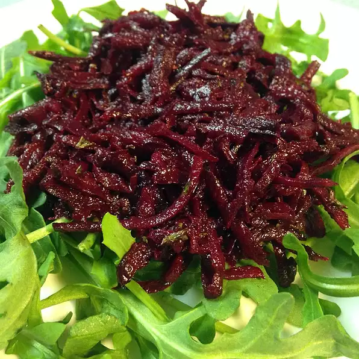

Raw Beet Salad
I was looking for a way to use raw beets and found a recipe online. I changed it a bit to use ingredients
that I grow and use. It's so yummy and is so nutritious because the nutrition isn't cooked out of the beets.
Everyone that has tried it, likes it. It's better if let set for a few hours but doesn't have to be. Serve
for a cold lunch with boiled eggs on a bed of lettuce.
Ingredients
- 1 pound beets, grated
- 2 tablespoons balsamic vinegar
- 1 tablespoon extra-virgin olive oil
- 1 tablespoon finely chopped fresh parsley
- 1 large clove garlic, minced
- 2 teaspoons Dijon mustard
- ¼ teaspoon sea salt
- ⅛ teaspoon freshly ground black pepper
Steps
- Combine beets, balsamic vinegar, olive oil, parsley, garlic, mustard, sea salt, and black pepper in a
bowl.